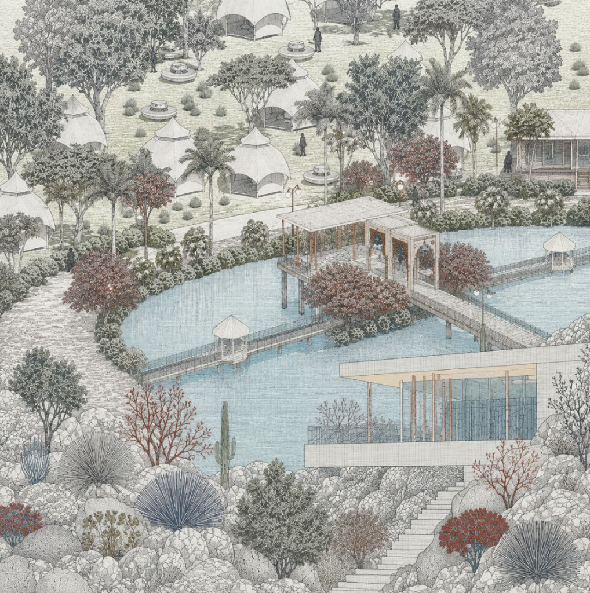

Spatial practice
Architectural portfolio
Form, light, and material, selected architectural work from my practice in shaping space.

Portfolio
Scroll through every page below.
Spatial practice
Form, light, and material, selected architectural work from my practice in shaping space.

Scroll through every page below.